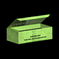
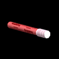

Voici une liste de tous les objets à ramasser qui se trouvent dans les salles de classe :
 Lampe
Lampe
La lampe rechargeable de Jake est disponible dès le début du jeu et n'a pas besoin d'être ramassée. Elle peut émettre de la lumière partout dans les salles et permet de découvrir d'autres sources de lumière et objets à ramasser. Étant donné que Jake tient la lampe devant lui, il ne peut pas l'utiliser pour créer des faisceaux lumineux sur lesquels il peut marcher. La charge de la lampe ne dure que quelques secondes mais il est possible de la recharger en la secouant dans le sens de la longueur pendant 2 secondes.
 Lance-pierre
Lance-pierre
Le lance-pierre peut servir à casser des vitres ou des objets distants. Il est disponible dès le début du jeu mais Jake doit ramasser les pierres pendant tout le jeu pour pouvoir continuer à l'utiliser. Les pierres ramassées ne peuvent être utilisées que dans la pièce où Jake les a trouvées.
Boîte de pierre
Chaque boîte de pierre ramassée ajoute une pierre au stock du joueur.
 Pétard
Pétard
Jake peut lancer le pétard n'importe où dans la pièce. Lorsqu'il explose, il crée un éclair de lumière et détruit tous les objets qui se trouvent immédiatement à côté. Dans les niveaux ultérieurs, des objets fragiles sont placés près des fenêtres et pour briser la vitre sans casser l'objet, il faut lancer le pétard de l'autre côté de la fenêtre.
Télécommande
La télécommande marche pour tous les téléviseurs dans la salle. Si elle est activée, le joueur peut appuyer sur le bouton A et passer en cycle d'un téléviseur à l'autre et les éteindre tous une fois par cycle. Une télévision détruite ne peut plus être allumée.
Torchère
Jake peut faire tomber la torchère devant lui pour créer une petite zone de lumière qui fait le lien avec d'autres sources de lumière. Elle est utilisée en appuyant sur le bouton A et en faisant glisser la télécommande Wii horizontalement. Une fois la torchère au sol, elle ne peut pas être ramassée ni réutilisée. Elle brûle quelques temps, puis s'éteint petit à petit et disparaît.